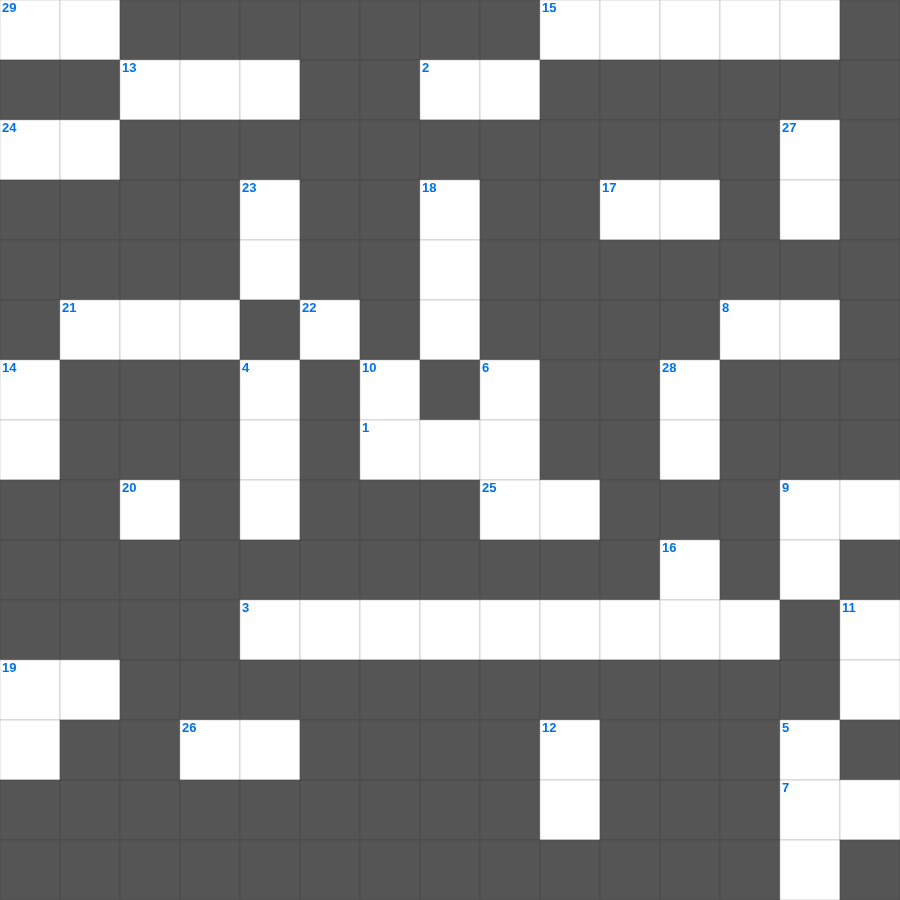

성경 인물 마스터 100
📌 서비스 정의
십자가로세로는 교회 주보와 주일학교에서 사용할 수 있는 성경 기반 가로세로 퍼즐 서비스입니다. 성경 인물, 사건, 핵심 구절을 바탕으로 제작되었습니다. 온라인 풀이 및 인쇄 기능을 제공합니다.
오늘은 성경의 주요 내용을 담은 성경 무료 성경퀴즈를 준비했습니다. 총 35개의 힌트가 있으며, 주일학교 교재나 성경공부 자료로 활용하기 좋습니다. 무료로 즐기는 성경 가로세로 퍼즐을 지금 바로 풀어보세요!

📝 가로 힌트
1. 볼지어다 내가 문 밖에 서서 이것노니 누구든지 내 음성을 듣고 문을 열면
2. 그들이 이제는 더 나은 본향을 사모하니 곧 이것에 있는 것이라
3. 계시록 3장: 열면 닫을 사람이 없고 닫으면 열 사람이 없는 이
7. 너희가 견디고 있는 모든 박해와 환난 중에서 너희 이것과 믿음으로 말미암아
7. 주께서 너희 마음을 인도하여 하나님의 사랑과 그리스도의 이것에 들어가게 하시기를 원하노라
8. 또한 우리를 부당하고 이것 사람들에게서 건지시옵소서 하라 믿음은 모든 사람의 것이 아니니라
9. 각각 이것을 받은 대로 하나님의 여러 가지 은혜를 맡은 선한 청지기 같이 서로 봉사하라
13. 그런즉 누구든지 그리스도 안에 있으면 새로운 이것이라 이전 것은 지나갔으니 보라 새 것이 되었도다
15. 이런 자가 미혹하는 자요 이것이니라
17. 형제 이것하기를 계속하고 나그네 대접하기를 잊지 말라
19. 이는 물이 바다를 덮음 같이 여호와의 이것을 아는 지식이 세상에 가득함이니라
20. 너희 금과 은은 녹이 슬었으니 이 녹이 너희에게 증거가 되며 이것 같이 너희 살을 먹으리라
21. 이들은 다 믿음을 따라 죽었으며 약속을 받지 못하였으되 그것들을 멀리서 보고 환영하며 또 땅에서는 외국인과 이것임을 증언하였으니
24. 우리는 구원 받는 자들에게나 망하는 자들에게나 하나님 앞에서 그리스도의 이것이니
25. 생각하건대 현재의 이것은 장차 우리에게 나타날 영광과 비교할 수 없도다
26. 만군의 여호와께서 말씀하시되 종말에 이르러는 여호와의 전의 산이 산들의 꼭대기에 굳게 서며 이것들이 그리로 모여들 것이라
29. 만군의 여호와가 이르노라 너희가 내 제단 위에 헛되이 불사르지 못하게 하기 위하여 너희 중에 성전 문을 이것 자가 있었으면 좋겠도다
📝 세로 힌트
4. 부한 자는 자기의 이것함을 자랑할지니 이는 그가 풀의 꽃과 같이 지나감이라
5. 장로에 대한 고발은 두세 이것이 없으면 받지 말 것이요
6. 믿음으로 칠 일 동안 이것을 도니 성이 무너졌으며
7. 학개 2장에서 하나님이 스룹바벨을 무엇으로 삼으시겠다고 했나
8. 이것은 어떤 모양이라도 버리라
9. 하나님은 교만한 자를 대적하시되 겸손한 자들에게는 이것을 주시느니라
10. 사람이 무엇으로 심든지 그대로 이것리라
11. 하나님의 공의로운 이것의 표요 너희로 하여금 하나님의 나라에 합당한 자로 여김을 받게 하려 함이니
12. 미혹하는 자가 세상에 많이 나왔나니 이는 예수 그리스도께서 이것으로 오심을 부인하는 자라
14. 믿음은 바라는 것들의 이것이요 보이지 않는 것들의 증거니
16. 아무것도 없는 자 같으나 모든 것을 이것 자로다
18. 너희는 돌아보아 하나님의 은혜에 이르지 못하는 자가 없도록 하고 또 이것이 나서 괴롭게 하여 많은 사람이 이로 말미암아 더럽게 되지 않게 하며
19. 그 날에 그가 강림하사 그의 성도들에게서 이것을 받으시고
20. 너희 믿음의 확실함은 이것으로 연단하여도 없어질 금보다 더 귀하여
22. 바울과 바나바를 신으로 오해했던 루스드라 사람들이 바울에게 던진 것
23. 오직 하나님의 성령의 나타나심과 이것으로 하여
27. 혹 이것하는 자가 너희를 시험하여 우리 수고를 헛되게 할까 염려함이니
28. 요한이서 1장 11절: 인사하는 자는 그 악한 일에 무엇하는 자인가
🧩 이 퍼즐에서 배우는 내용
이 퍼즐은 성경 인물 마스터 100의 핵심 단어와 개념을 자연스럽게 복습할 수 있도록 구성되었습니다. 주일학교 수업이나 개인 성경공부에서 학습 내용을 점검하는 용도로 바로 활용할 수 있습니다.
🧑🏫 교회 교육 자료 활용
이 퍼즐은 주일학교 교재 추천 자료로 활용할 수 있고, 주일학교 주보에 넣기 좋은 분량으로 구성되어 있습니다. 수업용 주일학교 교안에 활동지로 붙이거나, 예배 후 복습용 주일학교 공과교재로 바로 사용할 수 있습니다.
🏷️ 키워드
성경 무료 성경퀴즈, 성경, 십자가로세로, 성경퀴즈, 말씀퀴즈, 가로세로퍼즐, 주일학교 교재 추천, 주일학교 주보, 주일학교 교안, 주일학교 공과교재